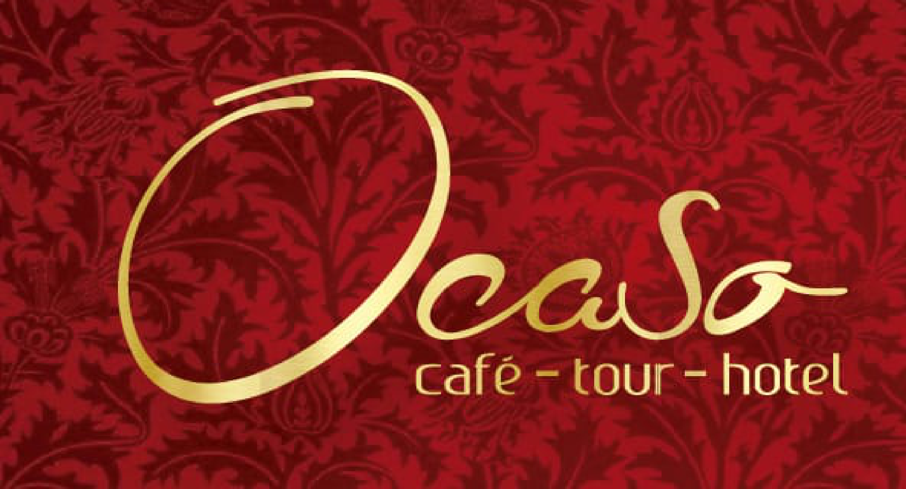
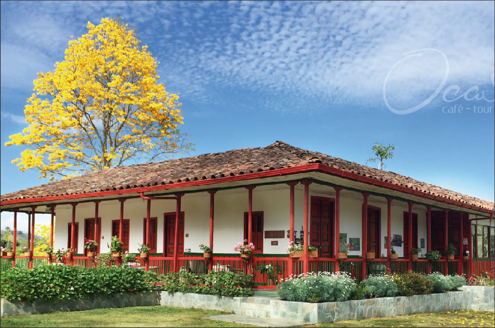

Emblemática finca cafetera en funcionamiento rodeada por los imponentes paisajes del Quindío y arquitectura tradicional de la colonización antioqueña. Ofrece experiencias inmersivas de turismo vivencial, caficultura sostenible y alojamiento rural en un entorno natural único.

Este negocio en Salento destaca por su ubicación, atención y conexión con el turismo del Quindío, siendo una opción útil para viajeros que buscan comodidad, cultura o experiencias auténticas.
Todo lo que necesitas saber para planificar tu visita
Vereda Palestina, Kilómetro 3.8 vía Salento (costado derecho después de la cancha de baloncesto), Salento, Quindío
Coffee Tour Tradicional: Desde $60.000 COP
Coffee Tour Premium: Desde $120.000 COP
Alojamiento: Consultar disponibilidad
4.8/5 (24 reseñas)
Finca cafetera / Café - tour - hotel
Vive experiencias auténticas en la finca cafetera
Duración: 1 hora y 30 minutos | Precio: Desde $60.000 COP
Recorrido guiado por plantaciones, proceso de beneficio (despulpado, lavado y secado artesanal), estación de compostaje y degustación de café sostenible de la finca.
Duración: Aprox. 3 horas | Precio: Desde $120.000 COP
Inmersión profunda en la caficultura, visita a la zona de tostado y sesión sensorial avanzada / cata técnica de cafés especiales.
Duración: Estadía por noche | Precio: Consultar disponibilidad
Hospedaje en auténtica casa típica cafetera con comodidades tradicionales, avistamiento de fauna y flora local.
Explora Finca Cafetera El Ocaso como si estuvieras allí
Descubre otros Finca cafeteras similares en las cercanías de Finca Cafetera El Ocaso.